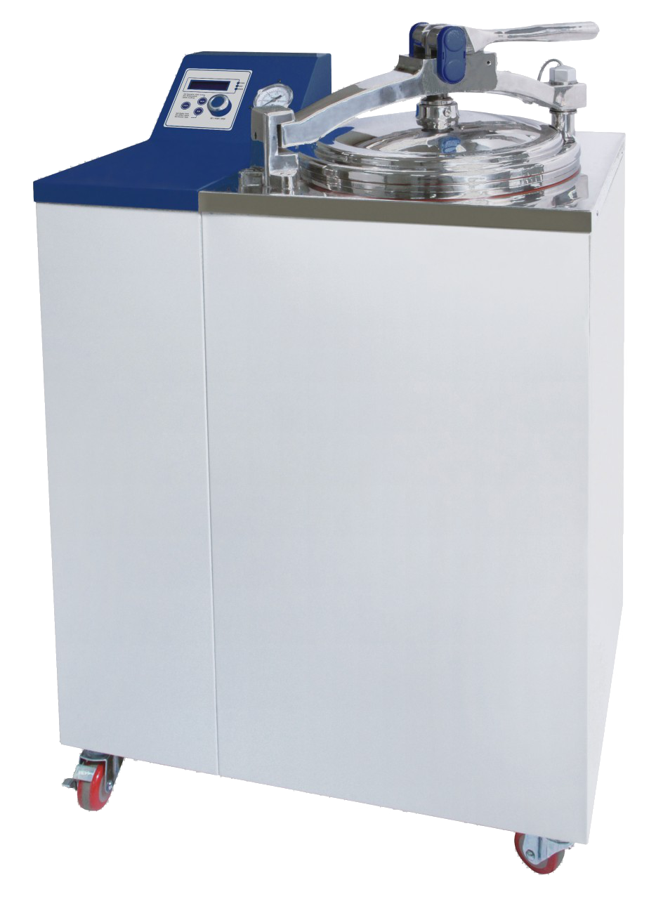

Autoclave Daihan MaXterile 60

| Autoclave Daihan MaXterile 60 | |
|---|---|
| Localização: | Lab. 2.19 Edf. 7 |
| Responsável: | Margarida RamiresRodrigo Borges |
| Operador: | Utilizador |
| Princípio de Funcionamento: | Esterilização |
| Fabricante: | Daihan Scientific Group |
| Modelo: | MaXterile |
| Tipo: | Autoclave |
| Website: | Daihan Scientific Group |
A Daihan MaXterile 60 é uma autoclave vertical de vapor destinada à esterilização de materiais, soluções e resíduos laboratoriais através de calor húmido sob pressão. O equipamento permite a realização de ciclos de esterilização até 132 °C e 2 bar, sendo adequada para aplicações em laboratórios de investigação, microbiologia, biotecnologia e ciências ambientais.
Equipada com um sistema de controlo digital automático baseado em lógica Fuzzy, a MaXterile 60 permite programar e monitorizar ciclos de esterilização de forma simples e reprodutível, incluindo controlo de temperatura, tempo de exposição e pressão. A câmara de esterilização em aço inoxidável garante elevada resistência à corrosão e durabilidade, enquanto o sistema de segurança eletrónico da porta impede a abertura durante condições de pressão elevada.
Com uma capacidade de 60 litros, esta autoclave permite a esterilização de materiais sólidos e líquidos, sendo adequada para esterilização de meios de cultura, material reutilizável de laboratório, recipientes de amostragem e tratamento de resíduos biológicos antes da eliminação.
Calendário / Disponibilidade
RequisitarPrincipais Aplicações
- Esterilização de material de laboratório;
- Esterilização de meios de cultura;
- Esterilização de soluções aquosas;
- Tratamento de resíduos biológicos;
- Preparação de material para ensaios microbiológicos;
- Processos laboratoriais em biotecnologia e ciências ambientais;
- Descontaminação de materiais reutilizáveis;
Específicações Técnicas:
| Específicação | Valor |
|---|---|
| Fabricante | Daihan Scientific Group |
| Modelo | MaXterile 60 |
| Temperatura Máxima de Operação | 132 °C |
| Precisão de Temperatura | ±0.1 °C |
| Pressão do Vaso | máx. 2 bar |
| Volume | 60 L |
| Dimensão Interior | Ø 350mm x h 650mm |
| Controlador | Digital Fuzzy-controller with Jog-Dial knob (Turn+Push) |